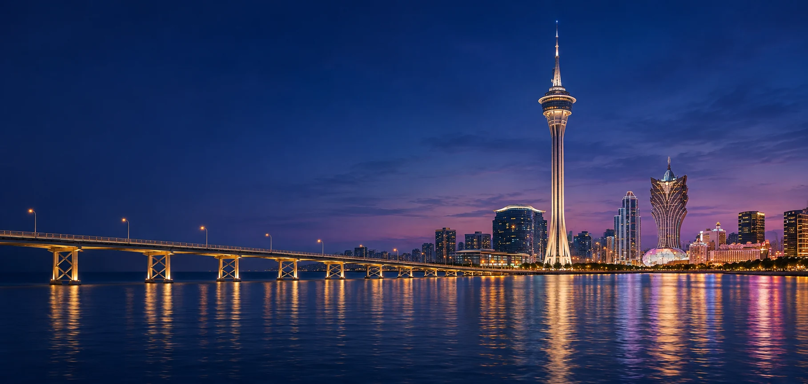

Endothelial biology & homeostasis
Investigating endothelial signalling, nitric oxide pathways, barrier integrity and vascular tone regulation.

12th Scientific Meeting · First announcement
The 12th Scientific Meeting of the Asian Society for Vascular Biology
Vascular Health and Disease Pathogenesis: Exploring Mechanistic and Translational Frontiers
The Society
Founded in Hong Kong in 2004 and holding its inaugural meeting in Shanghai in 2005, ASVB brings together basic scientists, clinicians and early-career investigators across the Asia-Pacific to study vascular function and disease.
The Society’s members come from mainland China, Hong Kong, Macao and Taiwan, as well as Japan, South Korea, Singapore and Malaysia.
Scientific scope
Through plenary lectures, the Young Scholar Forum and poster sessions, ASVB bridges mechanistic vascular biology with clinical translation.
Investigating endothelial signalling, nitric oxide pathways, barrier integrity and vascular tone regulation.
Mechanisms of atherosclerosis, smooth muscle remodelling, aortic aneurysms and pulmonary hypertension.
Cardiometabolic regulation, vascular inflammation, perivascular adipose tissue and vascular ageing.
Intravital vascular imaging, multi-omics profiling and organ-specific disease models across disciplines.
Bridging laboratory mechanistic discoveries with clinical diagnosis, risk stratification and therapeutics.
Young Scholar Forum and poster sessions fostering mentorship and collaboration across Asia-Pacific teams.
Meeting archive

Meeting themeInnovation, Precision, Collaboration: Shaping the Future of Vascular Biology
31 Invited main-session talks · 9 Young investigator talks · 45 Posters presented

ASVB meeting themeInnovations and Challenges in Vascular Biology
3 Venues at the joint meeting · 11 ASVB session talks · ≈200 Joint-meeting participants
Companies and institutions are welcome to discuss sponsoring or exhibiting at Macao 2027 with the meeting secretariat.